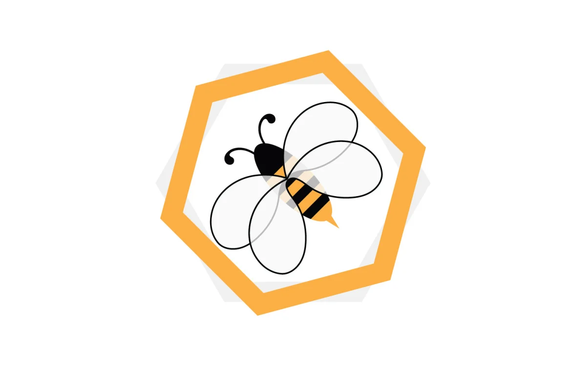

|  | |
Quem são elas...Abelhas são animais pertencentes à Família Apidae. Elas geralmente não ultrapassam três centímetros de comprimento; e o corpo é dividido em cabeça, tórax e abdome. Elas possuem também olhos compostos, dois pares de asas, três pares de pernas e um de antenas As abelhas podem ser consideradas de acordo com seus hábitos, ou outras conveniências, em três categorias: sociais, solitárias e parasitas. As abelhas sociais são as que vivem em enxames, isto é, em grande número de indivíduos no mesmo ninho, e onde haja divisão de trabalho e separação de castas. As abelhas contribuem para a perpetuação das matas nativas e de toda fauna da nossa região. Os insetos polinizadores, em especial as abelhas, são de vital importância para os ecossistemas e a agricultura. |
|
| Desenvolvido por Adenora Martins | |